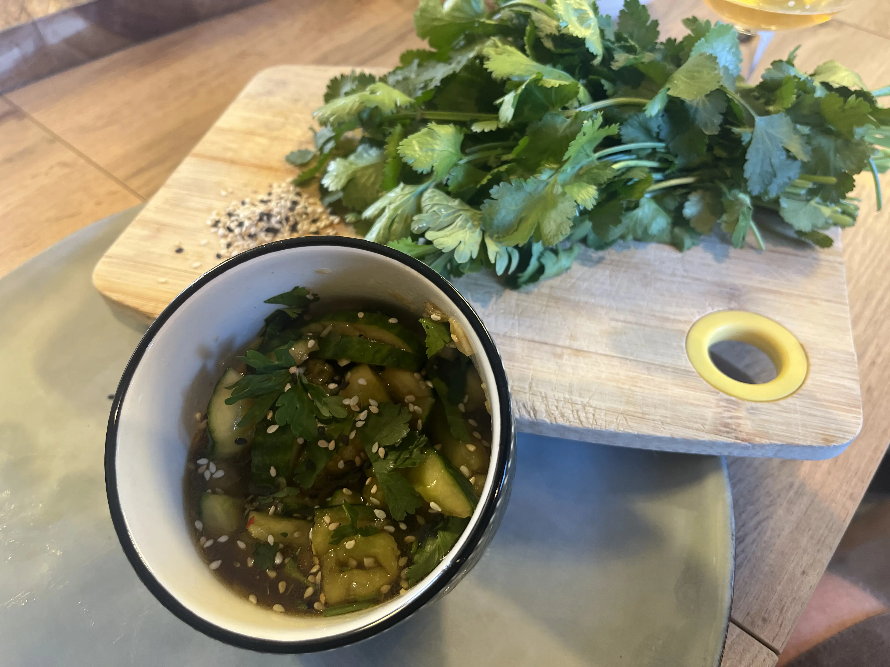

Smashed Cucumber

A delicious cucumber salad inspired by a Chinese recipe. A salad that is often found in Sichuanese restaurants. It is spicy, stuffed with garlic, fresh herbs, sesame oil. It's a delight even if the cucumber will suffer some damage.
Ingredients
- 1 cucumber
- 4 tablespoons of rice vinegar (you can choose Chinese black vinegar but you can find rice vinegar more easily)
- 3 tablespoons of soy sauce
- 3 tablespoons of sesame oil (grilled)
- 1 tablespoon of brown sugar
- 1 tablespoon of brown sugar
- 1 tablespoon of sesame seeds
- 1 teaspoon of flaked chili pepper
- 2 cloves of garlic
- 5 sprigs of coriander
Steps
- Finely chop the garlic.
- In a large bowl, mash the garlic and brown sugar.
- Add the vinegar to dissolve the sugar
- Then add the soy sauce, sesame oil, and chili pepper.(The marinade is done!)
- Tap the cucumber with a rolling pin to break up the fibers and obtain pieces. You can finish with a knife.
- In a salad bowl, mix the cucumber and marinade. Refrigerate for 30 minutes.
- Serve in a small container. finish the topping with sesame seeds and coriander leaves. Enjoy Note Spicy?! Adjust the chili to your liking!
Home